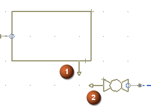
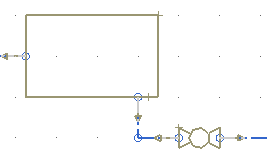

放置修复路径
在储气罐与 VALVE_2_OUT 之间放置修复路径。
-
在逻辑管线布置工具条上的路径下拉菜单中，选择修复路径
 。
。 -
选择 TANK_2上的端口 P1(1)，然后选择 VALVE_2_OUT 上的端口 P2(2)。

-
在设置组的方法列表中，选择交点。
-
点击确定。

提示
您创建管线段时自动添加到其中的装配约束，在这个图中并未显示。如果您想隐藏部件中的约束，打开装配导航器
 ，然后右击约束节点并清除在图形窗口中显示约束复选框。
，然后右击约束节点并清除在图形窗口中显示约束复选框。